豆瓣在中国可以说独树一帜，常常被别人分析来分析去
最具有参考价值的就是豆瓣自己极为重视的推荐机制
这是豆瓣核心竞争力的原动力，也是内容组织的催化剂
下面我就以豆瓣为例，简单阐述一下我的一些个人看法
真正长期留住用户的，是一个网站的用户价值，而真正的用户价值，是能够为用户带来有用价值的产品；对于豆瓣来说，是能够在大量的用户和数据之中，挖掘相互的联系，从而提供更加丰富和实用的信息，就是实现了其真正的用户用户价值
在这样的前提下，豆瓣采取的是“不运营”的方法，内容由用户来发布和修改，在不断增加的用户与内容之间，推荐算法成为了有效组织这一切的关键动力
一直以来，豆瓣对推荐系统的研发和改进投入了很大的精力，形成了以“热门推荐”，“新品推荐”，“豆瓣猜你会喜欢”，“喜欢XX的也喜欢”，“产品关联推荐”，“用户关联推荐”等的产品形态
从整体来看，便成为以推荐系统为支撑的内容兴趣社区，以用户兴趣和选择为基础，使用推荐和关联匹配来延伸用户与内容的接触面，从而“猜”出用户所喜欢，“推”出用户应还喜欢，逐渐将更加符合用户的内容展现出来，营造个性化的产品形态
首先举一个简单的例子，如果在豆瓣的首页搜索“黑镜第二季”得到的集过如下图所示，搜索结果准确度非常低
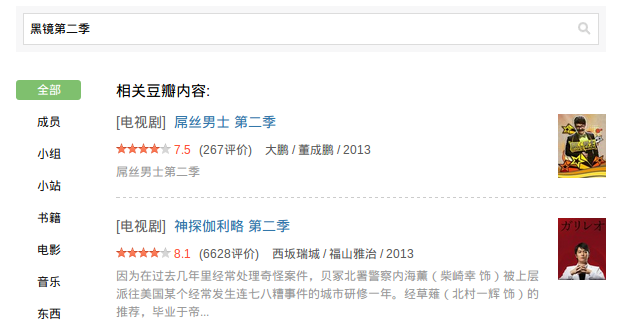
如果将“黑镜”和“第二季”中间分开，使用“黑镜 第二季”，那么结果正确，如下图所示
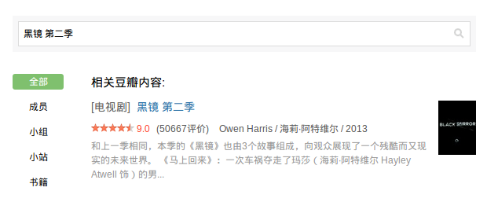
只是简单的对豆瓣的全站搜索吐槽一下，但是一个推荐算法做的不错，甚至很好的公司，为什么对于搜索却这么“不上心”？
首先不应该说豆瓣对于搜索不上心，推荐系统一直是豆瓣的核心竞争力，这有效地作用于读书，电影推荐等方面，也一直为人津津乐道，但是搜索对于用户来说也同样重要，如何更好的做好推荐，不得不考虑以下搜索对于豆瓣的意义
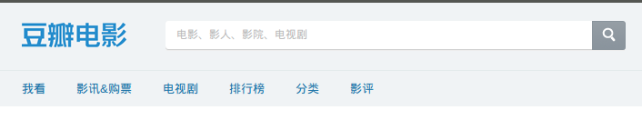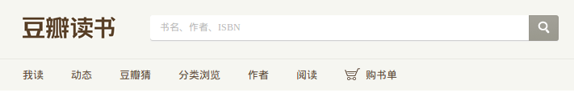
从用户行为角度来看：搜索行为是因为站内的导航无法满足用户的需求，导致用户只好通过搜索来找到内容，在内容非常丰富的前提下，豆瓣的更多精力用于如何帮助用户找到感兴趣的内容，而不是让用户跳过这一切直接搜索内容，换句话说，就是利用良好的推荐算法来帮助用户找到应该找到的内容。但是即使如此，搜索对于一个内容型网站来说，还是非常重要的，我想豆瓣不会一直弱化这一点
从产品结构角度来讲：豆瓣希望每个子产品的独立性更强一些，将子产品的入口的搜索强化，而不是全站搜索，鼓励用户从子产品进行信息使用；如果全站搜索做的非常好，也会降低子产品的独立性，很多用户可能直接进入豆瓣就进行检索，而弱化了推荐系统费尽心思做的内容推荐
豆瓣的产品线较长，子产品较多，推荐系统贯穿于整个网站之中，为了快速说明问题，接下来我就主要讲一下首页推荐以及读书，电影，豆瓣FM三个典型的产品中推荐系统的应用价值，同时对推荐效果做出一些个人的优缺点评价
新版豆瓣猜：展示的是一部分豆瓣的主页内容,在左侧右上角的“首页设置”中可以进行勾选你感兴趣的类别，主页推荐内容会自动为你推荐精选热点内容，包括读书，电影，音乐，阅读，线上活动等，推荐系统会分析用户以及用户群体的操作行为（包括大家标记的想听，想看等等操作因素），进行热点内容的及时推送
主要是以浏览发现和用户在各子产品的操作和行为习惯为主，当然会同时考虑以此为中心的延伸行为和用户关联行为，突出向用户推荐热门的，基于全站各子产品内容精选后的推荐结果，目的是将流量引向各子产品，对用户喜好进行进一步数据挖掘，从而提供更加个性化的针对用户的内容
没有影评书评等：这个问题其实是一个去中心化的程度衡量问题，用户评论等内容的发散性太大，不利于推荐内容收敛，易产生针对性不强的情况，使推荐结果泛泛而现，但是在豆瓣的发展过程中，以用户为中心而不是以内容为中心的理念也促使豆瓣猜的内容越来越私人化，这难免导致一些用户担心过于私人化，而无法发现广泛化的公共热门内容，但是这一点是矛盾所在，也是推荐系统必然产生的矛盾之一
有一些人说读书首页的新书速递没有必要，这一点我倒是觉得这个栏目很有必要，虽然一些时候我们是为了了解一本书的评价或者其他信息而在豆瓣读书检索，浏览书评等等，但是这不妨碍系统为我们推荐一些不一定符合我们口味和方向的书籍，如果说这是信息干扰的话，不如说大部分的信息都是信息干扰
推荐系统的责任不只是推荐感兴趣的内容，同时也起到带领我们发现未知的有意思的内容的作用，否则如果只含有推荐兴趣点的部分，而没有广泛化的内容推荐，我们会越来越陷入中心化壁垒，在推荐结果中慢慢缩小了我们发现精彩内容的机会
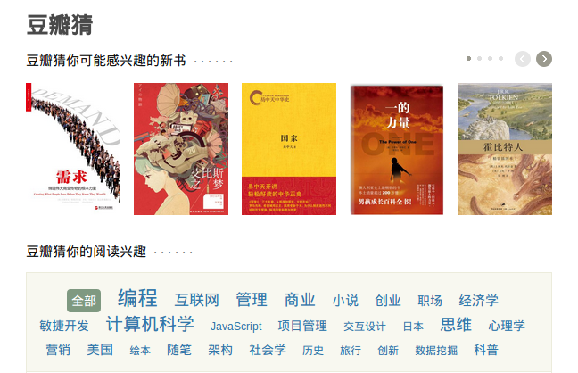
豆瓣读书的豆瓣猜采用的是标签化管理，豆瓣猜（读书）的准确度较高，通过每天分析你的读过、想读、在读、评价行为进行推荐
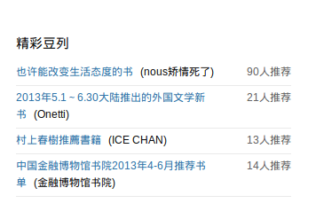
豆列推荐有利于用户在相同书目类型下结合其他豆友的总结推荐结果，进行进一步的查阅了解，这样促使了社会化推荐的效果，同时保证了用户产生内容的有效传播，是对推荐内容的有效补充
能够有效利用用户的操作行为（读过、想读、在读、评价行为）进行深层次的数据分析，挖掘用户的阅读喜好和行为趋势，并且在积累的大量高质量书评信息的同时，在社区化书评氛围中营造了良好的推荐条件，做到自然而然地与电子商务衔接，拓展内容变现和信息引导
标签化管理：方便用户通过标签快速进行信息整合浏览，也方便豆瓣猜的数据收敛，为推荐算法提供更精准的元数据，用户同样可以在豆瓣猜中进行书籍喜好的删除，不断动态调整读书兴趣曲线，帮助系统推荐更加灵活
同时读书推荐有利于在用户收藏等行为的基础上形成良性循环，帮助用户进行读书计划管理，同时以此为基础进行发现拓展，为用户推荐更好的书籍，促进用户UGC的热情，产生更多的书评和笔记，丰富读书内容，从而形成一个良好的读书社区氛围
新书速递只分为虚构类和非虚构类两种类别，虽然右侧标明热门标签，但是却过分泛化了新书种类；换一种方式表达：新书推荐是应该保留的，但是新书推荐的标签种类选择，应该给用户一些自主选择权，不只是算法推荐的读书关联，同时也允许用户选择关注有可能感兴趣的读书标签，这样具有更多的选择空间
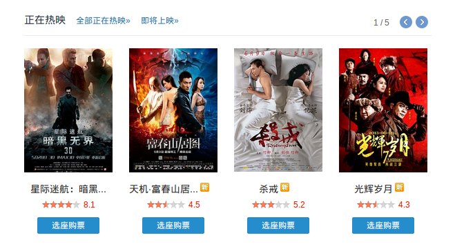
与读书的新书速递相同的是为用户提供最新的信息内容，但不同之处还是居多。这一部分推荐的主要是主要以影院档期为主的“固定式”信息推送，目的是让用户能够了解影院档期，以进行影片了解，观影安排等，进而引向电影票的购买行为
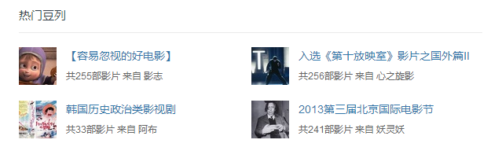
为用户提供其他用户的观影豆列，通过推荐，收藏等因素进行推荐，确保推荐豆列的质量，同时为用户提供更多的选择
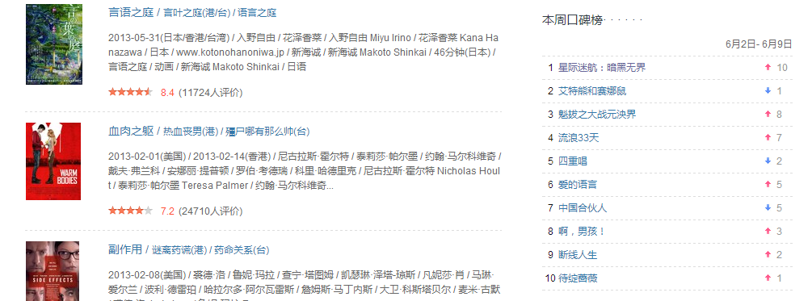
与豆瓣读书不同的是，电影的性质决定排行榜对于用户选择电影有着重要的参考价值，而且观看成本相较于读书来说要低很多，所以用户的转化率很高，提供更多的榜单有助于内容的收敛整合，方便用户及时了解电影排行动态
这部分推荐机制主要依据电影评价体系，集合众多豆友的操作（包括推荐，喜欢，收藏，想看，看过等行为等），为用户推荐集众多用户的实事推荐，具有更高的参考性和可信赖度
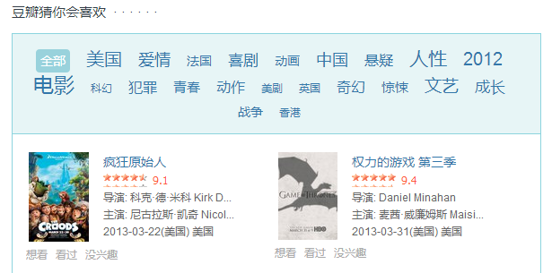
同样是根据标签管理，在单个推荐电影栏目中，丰富了用户操作，包含了想看，看过，没兴趣，可以直接和用户的电影管理连接，提供更加灵活的推荐依据
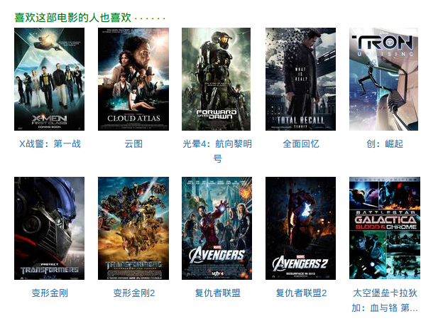
最为典型，也是最为流行和常用的推荐机制，通过找到用户之间的兴趣点联系，基于内容分析信息，综合相似用户对某一信息的喜好，预测与推荐更加丰富的信息
丰富全面的标签分类：不仅方便用户进行电影查询和标注，同时依托用户对于电影评价的标签标注，构建推荐系统的有力依据，使电影推荐与用户的喜好更加灵活的匹配，有利于电影和用户的协同过滤，是电影推荐准确的数据保障
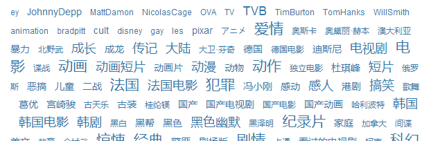
“水军”处理机制：作为很多人看电影的参考依据，但由于商业因素，豆瓣电影不可避免地会被电影水军刷分，发水帖等等，评分的不准确导致推荐电影也会受到一定程度的影响，进一步看，标签错误，极端评分，两极评价等等
过滤垃圾信息：垃圾影评的折叠，剧透评论过滤，水军推荐，刷“想看”，等等。水军等的大量涌入，会对推荐结果造成错误的导向，从而使用户形成“不可信”的感觉，导致用户对推荐结果的满意度降低
长尾信息处理问题：推荐系统关注的更多的应该是用户的兴趣点，推荐内容的范围要足够广泛，注意到大量的长尾内容，而目前好多的电影推荐更多的是热门或者大部分用户喜欢的电影，缺乏对长尾内容的挖掘
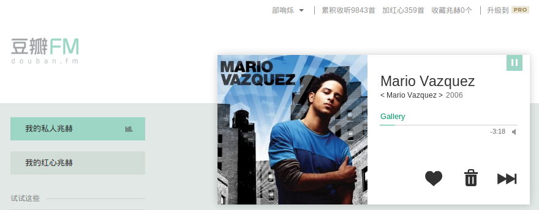
参考自知乎阿北的回答：豆瓣电台的私人电台会综合用户在豆瓣上的各种音乐行为做算法推荐。当然考虑最多的是电台本身的“红心”， “垃圾”，“跳过”这些数据
个人在豆瓣FM收听了快近万首音乐，说实话推荐的有时准有时不准，遗憾地说就是不太准，自然对其印象并不是很好，尽管一定使用了很多算法，甚至于“音乐基因工程”等等，但是效果才是最重要的~
推荐操作简单；显式和隐式的操作，能够及时反映用户的喜好变化和行为趋势，使用户不断定制与准确化自己的私人电台，使用越多，操作越多，推荐愈加精准，同时也有效解决短期用户喜好变化和长期习惯成长的问题
<曲库偏小：曲库音乐数量还是偏少，而且中英文的皮里明显倾斜于英文，很多流行音乐都找不到，加上偏文艺的音乐居多，导致想简单地听听流行音乐都不能满足
冷启动问题：用户在最开始使用电台的时候，选择歌手时可选项过少，而后续的播放过程中，起始的选择因素的作用并不明显，例如选择几个中文歌手，推荐的全是英文歌，如何在最开始为用户提供更加准确的起始类型确定，还是可以更完善一些
刚刚注册豆瓣的用户，并没有一个良好的冷启动解决方案，而是希望用户在使用过程中不断进行内容操作，从而提高推荐系统的准确度；但是类似Quora等网站在注册后有一个简单的兴趣，关注要点选择等，可以简单地解决一下初期用户的兴趣方向，在用户的使用中再进行动态的调整。这样的代价是用户需要进行一些额外操作，但是可以确定用户的基础兴趣需求，满足前期的推荐问题
新书速递的书籍过于泛化，虽不是什么大问题，但是用户可能更喜欢关注自己感兴趣的类别的新书，可以为用户提供新书速递的标签定制，用户可以点开读书频道就可以马上看到哪些书籍除了一些新书
例如我关注中信出版社的书籍，在读书首页定制我关注的新书，选择中信出版社标签，一旦有新书就会及时显示，如果没有就不显示。这样用户可以最快的了解到自己感兴趣的方面新书
类似电影未上映，便出现影评；极端词汇；用户注册时间很短，但却极度追捧一部电影等等特殊情况，在举报机制的基础上，算法方面要对异常用户行为和数据进行有效的过滤，确保尽可能通过算法手段，抑制水军和垃圾信息的产生
丰富曲库：虽然电台的算法较为复杂，但是基于较小的曲库，也难以发挥真正的推荐效果，协调好版权问题，对于曲库填充更多的主流音乐，符合大众口味，降低长尾内容的权重
标签冷启动优化：用户在刚刚使用电台的时候，提供多角度标记兴趣点，例如艺人，歌曲，专辑名称，风格等等，确定用户喜好初期基调，有利于前期的推荐效果，在使用初期减少用户流失
对现有豆瓣推荐系统的衡量指标来说，要考虑巨大的用户基数和内容组织形式，产品形态等多方面因素；评估的方法既要有基于统计数据的数据分析，也要有通过用户调查的具体反馈
用户满意度是衡量推荐效果的重要指标，主要可以通过问卷调查或者在线实验获得。
问卷调查：针对豆瓣的不同子产品，进行针对性的问题设计，类似于“你觉得豆瓣FM的私人兆赫推荐效果如何？”，“豆瓣电影的豆列推荐是否满意？”。确保调查样本的范围和数量，做好变量控制
数据分析：我们同样可以根据点击率、用户停留时间和转化率等指标度量用户的满意度
这是一个非常重要的推荐系统离线评测指标，可以以用户的历史行为记录作为实验数据集，将该数据集通过时间分成训练集和测试集。最后，通过在训练集上建立用户的行为和兴趣模型预测用户在测试集上的行为，并计算预测行为和测试集上实际行为的重合度作为预测准确度
豆瓣的读书电影等都有评分机制，这就为评分预测奠定了良好的数据基础，根据用户对内容的评分，构建兴趣模型，可以预测其对未评分的内容的行为趋势，从而评估推荐准确度
当然，也可以通过用户问卷调查，或者用户访问调查得到更具体的反馈
由于豆瓣的内容庞大，存在典型的长尾效应，通过覆盖率可以衡量推荐系统对于内容的推荐广度，在满足推荐内容的用户满意度的基础上，也要考虑覆盖率。具体可以通过信息熵和基尼系数来计算
覆盖率反映出的另一个问题就是内容的马太效应，防止在用户基数较大的情况下，热门的内容占据了大量的推荐比例，要通过覆盖率来衡量是否具有良好的平衡效果
书籍，电影，音乐等等的内容数据庞大，如果推荐内容比较多样，覆盖了用户绝大多数的兴趣点，那么就会增加符合用户兴趣内容的概率，自然会相对提高满意度，尽可能达到推荐的效果
通过问卷调查的方式，询问用户是否信任推荐系统的推荐结果，以此来度量推荐系统的信任度；同样也可以使用线上反馈的方法
用户愈加信任推荐系统，就越会增加用户和推荐系统的交互，类似评分，贴标签，推荐等等操作，能够让推荐系统更加了解用户的真实需求
修改的模块只是少量内容，评估的指标应该侧重于改进的效果测评，而不是宏观上的整体测评，所以从以下几个角度进行焦点测评
新颖度是为用户推荐其并未发觉的热门度不高的内容，从而使用户感到推荐内容具备新鲜感，其衡量标准可以通过热门程度的反比例来计算，热门度越高的内容，新颖度越低
但是同时也要考虑用户的满意程度，可以通过调查问卷或者线上反馈问答的方法来进行统计
用户在使用豆瓣FM的时候，是希望与好听的音乐不期而遇，所以新颖度对于衡量推荐效果具有很大的参考性
通过用户刚开始使用的各项兴趣标记，以及丰富的曲库支持，在使用过程中，加上用户的显式和隐式操作，会为用户提供很多好听的“未知”的歌曲
同样新书的标签化定制，可以为用户不断提供新书速递，新书的特性满足了新鲜的条件，如果能够有效满足用户的需求，符合标签划定，那么用户满意度也会随之上升
惊喜度可以理解为：如果推荐结果和用户的历史兴趣不相似，但却让用户觉得满意，那么就可以说推荐结果的惊喜度很高，这与新颖度的区别在于，推荐的新颖性仅仅取决于用户是否听说过这个推荐结果
惊喜度的衡量可以通过定性的度量，首先定义推荐结果和用户历史上喜欢的内容的相似度，其次定义用户对推荐结果的满意度
用户满意度可以通过问卷调查或者在线实验获得，推荐结果和用户历史上喜欢的内容相似度，可以用内容相似度定义
修改的模块存在着很多的不确定性，需要用户参与来反馈数据以确定新的修改是否值得用户信任，使用情况是否良好，是否产生使用价值等等
为了确保新模块的信任度的真实性，可以为推荐结果加上,推荐理由，提高推荐的透明度